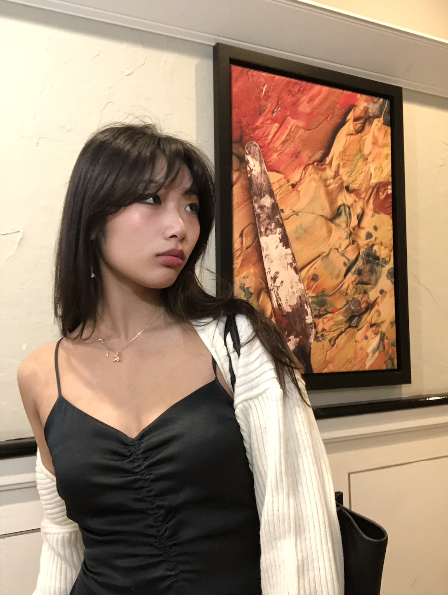

Hello, Bonjour :)
My name is Sydney Tran and I am the heart of creativity for my users.
I design pieces that are meaningful, unique, and impactful.
Currently, Communications Director @Students for Music and Wellness, Social Media Intern @Ascend Canada and Director of Marketing for its University of Waterloo student chapter, Product Design Intern @SwayBrand, and VP Marketing @University of Waterloo Chinese Student Association
Prev Marketing Intern @TD Bank